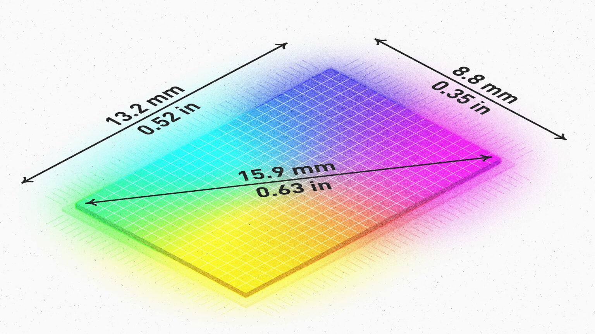
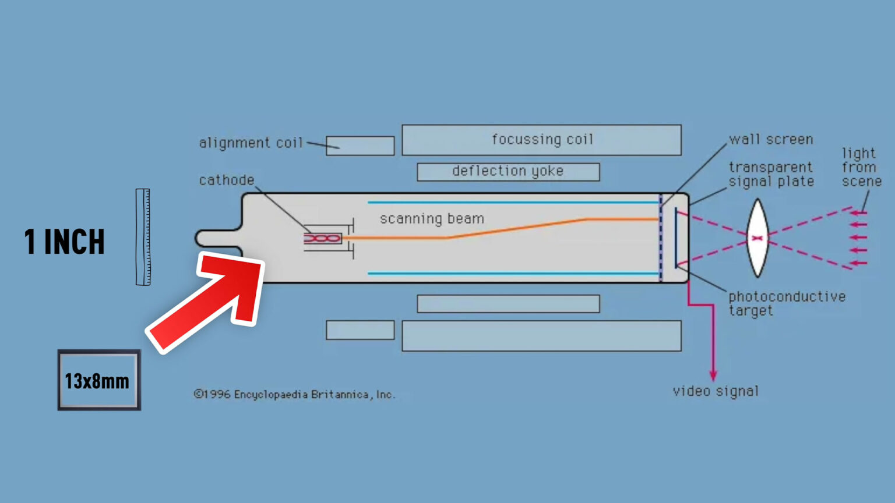

Curiozități
Multe camere foto și video sunt vândute ca având un "senzor de un inch(25.4mm)". Această denumire nu înseamnă ce ar părea la prima vedere. Un "senzor de un inch" are de fapt doar 0.52" x 0.35" (13.2mm x 8.8mm), cu diagonala de 0.63" (15.9mm).
Această denumire provine încă de la începuturile camerelor video pentru televiziune, cele folosind tehnologia CRT, care folosesc magneți pentru a redirecționa electronii. O mărime populară pentru acestea era un diametru al tubului de un inch, componenta sensibilă la lumină având o dimensiune de 13.2mm x 8.8mm.6

